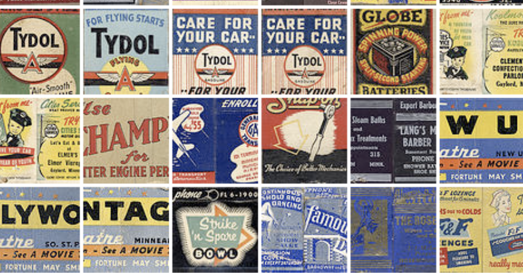

There was a time when people left restaurants with not just a receipt, but also a matchbook. Tucked into a coat pocket or slipped into a purse, it was more than just a few sticks of sulfur-tipped wood. It carried a brand, a memory, a place you’d been and might want to return to. Long before Instagram ads or loyalty programs, matchbooks quietly did something remarkable: they turned everyday moments into lasting impressions.
I like to think of matchbooks as the original viral marketing tool, small, portable, and designed to travel far beyond the place they came from.
This is the story of how they lit up the advertising world.
A Spark in the Late 1800s
Matchbooks, as we know them, didn’t exist until the late 19th century. Early matches were sold loose or in rigid boxes, functional, yes, but memorable? I would venture to say no.
That changed in the 1890s, when paper matchbooks started to appear in the United States. Their real breakthrough came in 1894, when a patent introduced a foldable cardboard cover that could hold matches neatly inside. Suddenly, matches weren’t just useful; they were printable. And that changed everything. For the first time, businesses had a cheap, highly portable advertising surface, something customers would actually take with them, use repeatedly, and share unintentionally.
The Birth of Pocket Advertising
By the early 1900s, companies began to realize what they had on their hands. A matchbook wasn’t just a giveaway; it was a message that traveled.
Restaurants, hotels, and bars quickly adopted them. Instead of handing out business cards that were likely to be tossed aside, they gave customers something practical. Every time someone lit a cigarette, candle, or stove, they saw the brand again. A single matchbook would generate dozens of impressions, long before marketers ever used that term. And unlike traditional ads, matchbooks weren’t intrusive. They were invited into people’s lives.
The Golden Age: When Every Table Had One
From the 1930s through the 1960s, matchbooks reached their peak. This was their golden age, the era when nearly every restaurant, hotel, and nightclub had its own custom design.
Walk into a steakhouse in New York, and you’d find matchbooks stacked by the host stand. Visit a hotel in Chicago, and they’d be placed neatly beside the concierge desk. Sit at a bar in Los Angeles, and you might leave with two or three without even thinking about it. They became part of the experience.
Upscale establishments leaned into elegant typography and minimal design, while diners and bars often used bold colors and playful logos. Some even included slogans, phone numbers, or tiny maps on the inside flap. In many ways, they were the Yelp page of their time, except you could hold them.
Pocket Icons: Notable Matchbooks
Mid-century Las Vegas produced some of the most recognizable matchbooks ever made. Casinos like the Stardust, Flamingo, and Sands used striking colors, starbursts, and glamorous typography to capture the energy of the Strip. Owning one today is like holding a piece of old Vegas.
Hotels such as the Waldorf Astoria and The Plaza created matchbooks that mirrored their brand: refined, understated, and quietly luxurious. Often embossed or printed with metallic inks, these matchbooks weren’t loud, but they didn’t need to be. They spoke to a different kind of audience.
In the 1950s and 60s, airlines like Pan Am distributed matchbooks as part of the travel experience. They featured sleek logos, global imagery, and a sense of optimism that defined the era. Today, they’re reminders of a time when flying felt glamorous, and every detail mattered.
Why Matchbooks Worked So Well
From a marketing standpoint, matchbooks were almost perfect.
They were affordable to produce in large quantities, useful, ensuring repeated interaction, portable, traveling far beyond their origin, and shareable, often passed between people. But more importantly, they created a subtle emotional connection. A matchbook wasn’t just about the business; it was about the moment tied to it. A first date, a late-night dinner, a weekend trip. The branding became intertwined with memory. Modern marketers spend millions trying to achieve that kind of association. Matchbooks did it for pennies.
The Slow Fade to Second Life
By the late 20th century, matchbooks began to disappear. Several factors contributed like a decline in smoking, increased regulations on tobacco-related items, rising production costs, and shifts toward other forms of advertising. Restaurants stopped ordering them. Hotels phased them out. The once-ubiquitous matchbook became a rarity. For many, they simply faded into memory.
But not entirely.
Today, matchbooks have found new life as collectibles. Collectors are drawn to them for many reasons, like nostalgia, design, historical significance, and rarity.
Some categories are especially sought after, like vintage Las Vegas casinos, closed or historic restaurants, airline and travel-themed matchbooks, and unique or limited-run designs. Condition matters, too. Unused matchbooks, especially those with intact matches, tend to be more valuable. But value isn’t always about price. Sometimes, it’s about the story.
If you’re new to collecting, vintage matchbook value is typically driven by rarity, condition, design, and historical context. Matchbooks from businesses that no longer exist, or that produced limited quantities, are harder to find. Unused, well-preserved matchbooks are more desirable than worn or damaged ones. Unique or visually striking designs often attract more attention and matchbooks tied to a specific era, event, or cultural moment carry added significance.
In other words, it’s not just what the matchbook is, it’s where it’s been.
From Matchbooks to Modern Marketing
It’s tempting to think of matchbooks as relics of a bygone era. But their core idea lives on. Today’s brands still chase what matchbooks did so effortlessly: physical connection, memorability, and shareability. A well-designed matchbook was essentially a micro-brand experience, something you could carry, use, and remember.
Explore More at The Match Parlor
Browse our growing matchbook archive.
Find other collectors to trade with.
The flame may be small, but collectors like you are helping it grow faster than ever!